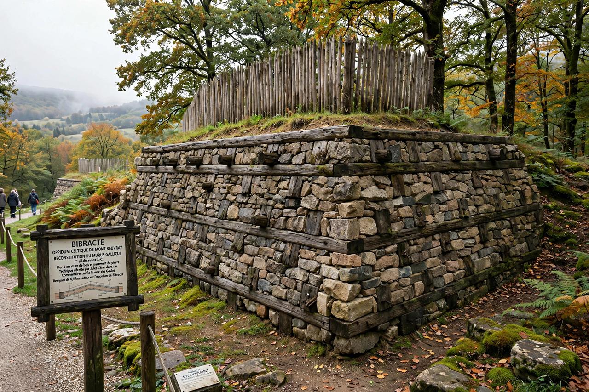

Oppidum
| Oppidum | |
|---|---|
| Culture | Celtic (La Tène) |
| Period | 2nd–1st century BCE |
| Examples | Bibracte, Manching, Alesia |
An oppidum (plural oppida) is a large fortified Iron Age settlement associated with the Celtic La Tène culture. The term was used by Julius Caesar in his Commentarii de Bello Gallico to describe the large defended towns he encountered in Gaul and southern Britain.

Characteristics
Oppida typically enclose tens to hundreds of hectares with massive ramparts — often of murus gallicus construction, timber-laced stone walls — and contain evidence of craft production, long-distance trade, and in many cases coin minting. Streets were sometimes laid out on regular plans, and some oppida show functional zoning between residential, industrial and ritual areas.
History
Oppida emerged in the 2nd century BCE as central places in late Iron Age Europe, flourishing during a period of population growth, expanding trade networks and political centralisation. Many were abandoned or destroyed during the Roman conquest of Gaul and the subsequent reorganisation of settlement; others, such as Aventicum, were refounded as Roman towns.
List of notable oppida
- Bibracte (Mont Beuvray, France) — capital of the Aedui
- Manching (Bavaria, Germany) — among the largest, with evidence of planned streets
- Alesia (Alise-Sainte-Reine, France) — besieged by Caesar in 52 BCE
- Camulodunum (Colchester, England) — later a Roman colonia